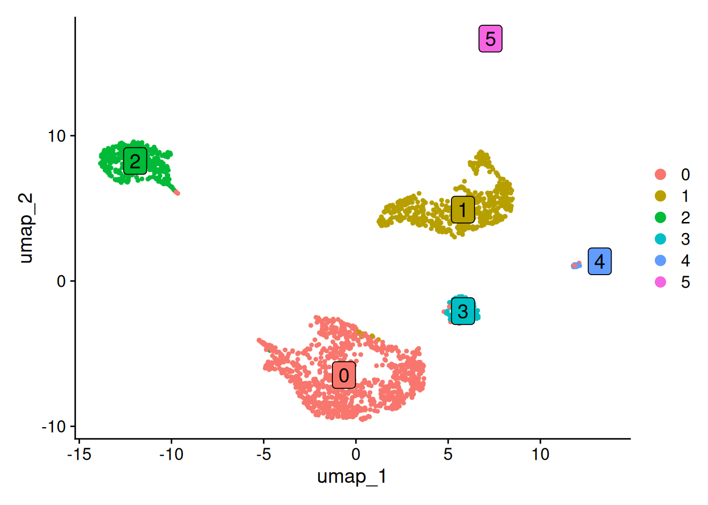

require(Seurat)Loading required package: SeuratLoading required package: SeuratObjectLoading required package: sp
Attaching package: 'SeuratObject'The following objects are masked from 'package:base':
intersect, trequire(ggplot2)Loading required package: ggplot2require(dplyr)Loading required package: dplyr
Attaching package: 'dplyr'The following objects are masked from 'package:stats':
filter, lagThe following objects are masked from 'package:base':
intersect, setdiff, setequal, unionrequire(Yano)Loading required package: Yanoexp <- ReadPISA("./exp/")
obj <- CreateSeuratObject(exp, min.features = 1000, min.cells = 10)
obj[["percent.mt"]] <- PercentageFeatureSet(obj, pattern = "^MT-")
obj <- subset(obj, nFeature_RNA < 9000 & percent.mt < 20)
# Downsampling to 2000 cells for fast testing
obj <- obj[, sample(colnames(obj),2000)]
# To improve visualization, we reduced the resolution when identifying cell clusters.
obj <- NormalizeData(obj) %>% FindVariableFeatures() %>% ScaleData() %>% RunPCA(verbose=FALSE) %>% FindNeighbors(dims = 1:10, verbose=FALSE) %>% FindClusters(resolution = 0.1, verbose=FALSE) %>% RunUMAP(dims=1:10, verbose=FALSE)Normalizing layer: countsFinding variable features for layer countsCentering and scaling data matrixDimPlot(obj, label=TRUE, label.size = 5, label.box = TRUE)